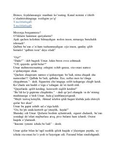

SYOta-onasini qiynab, keyinchalik to'g'ri yo'lni topgan yigit Umar haqida ibratli hikoya.
Ushbu asar hayot yo'lida adashgan, ota-onasining qadriga yetmaydigan yigit — Umar haqida hikoya qiladi. Kitobda uning tavbasi, bosib o'tgan og'ir sinovlari va iymonga kelish jarayoni ta'sirli tarzda bayon etilgan.